Power tools for developers · Mac care
Reclaim 14 GB. Free port 3000. Keep shipping.
A native macOS app that clears out node_modules and Docker from idle projects, shows who's holding a port, finds leaked secrets, and writes commit messages with AI that never leaves your Mac.
Pro is launching soon — download the free version now; your 7-day Pro trial starts automatically.
Download for Mac — FreemacOS 27+ · 6 MB · 7-day Pro trial included
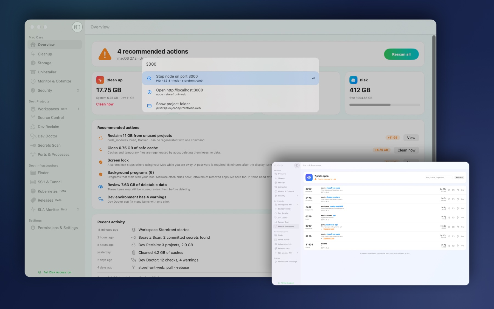
Tour
See it in action.
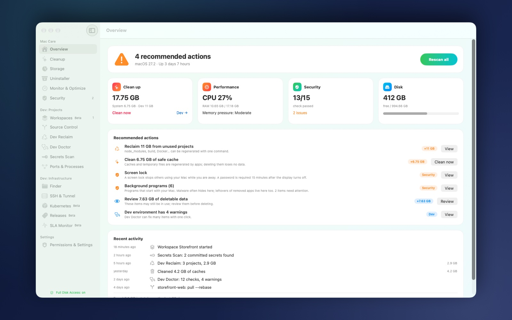
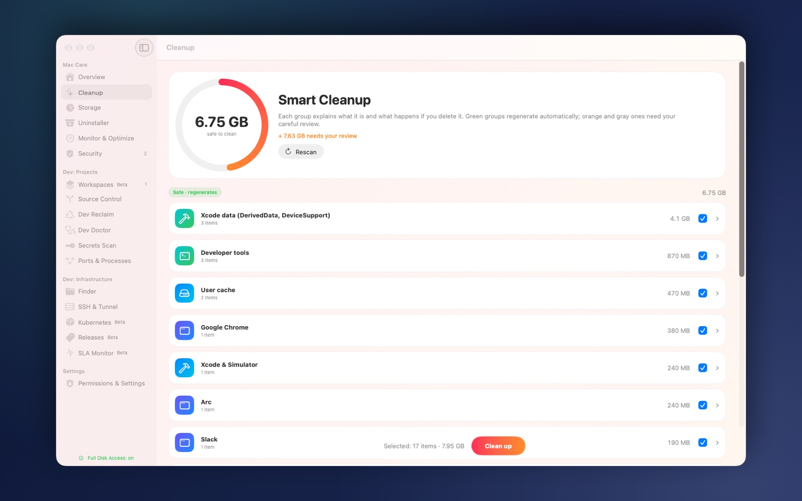
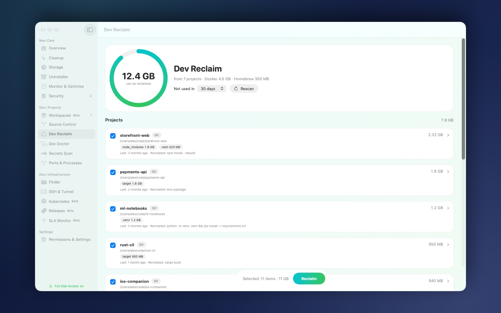
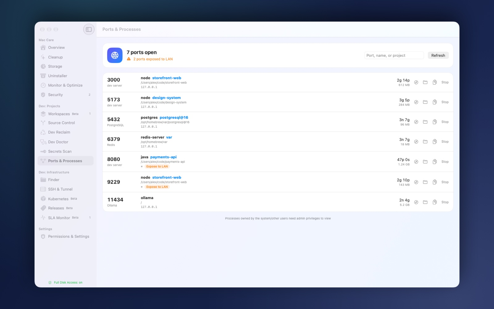
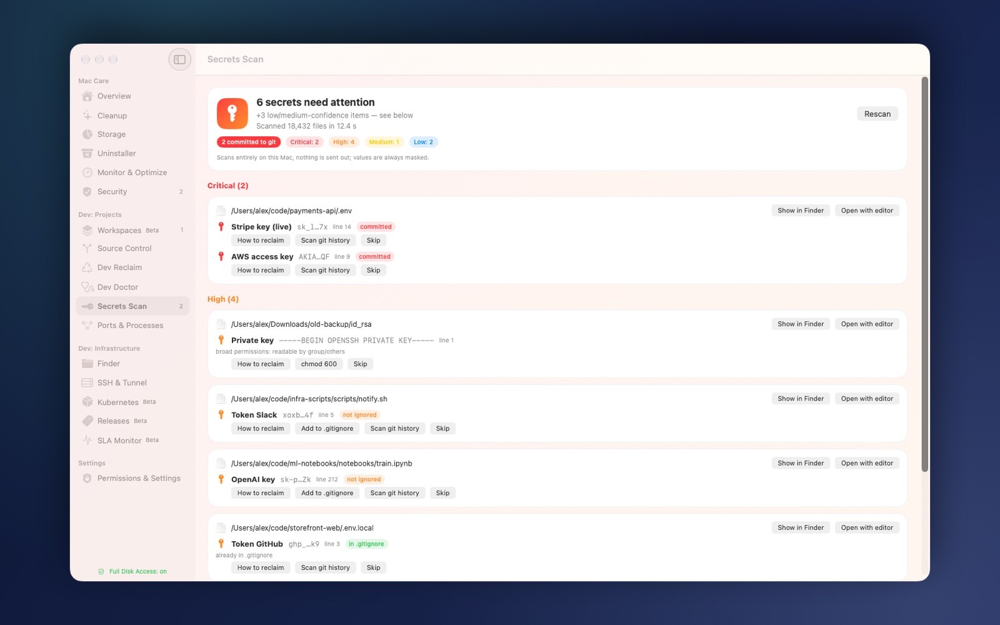
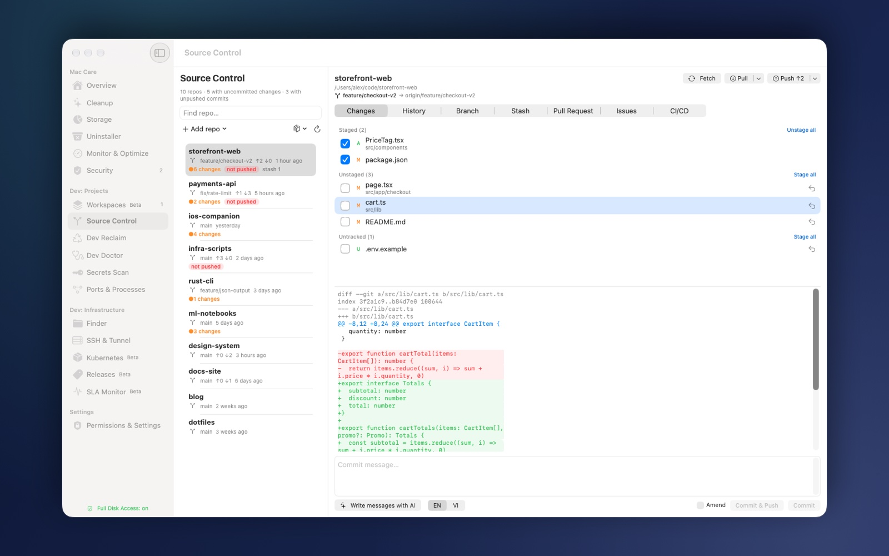
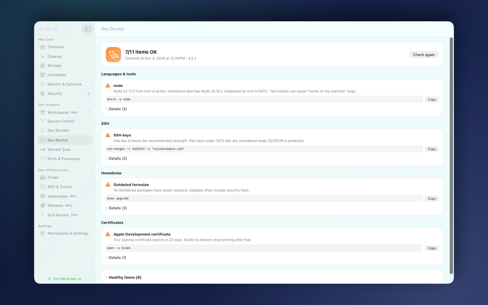
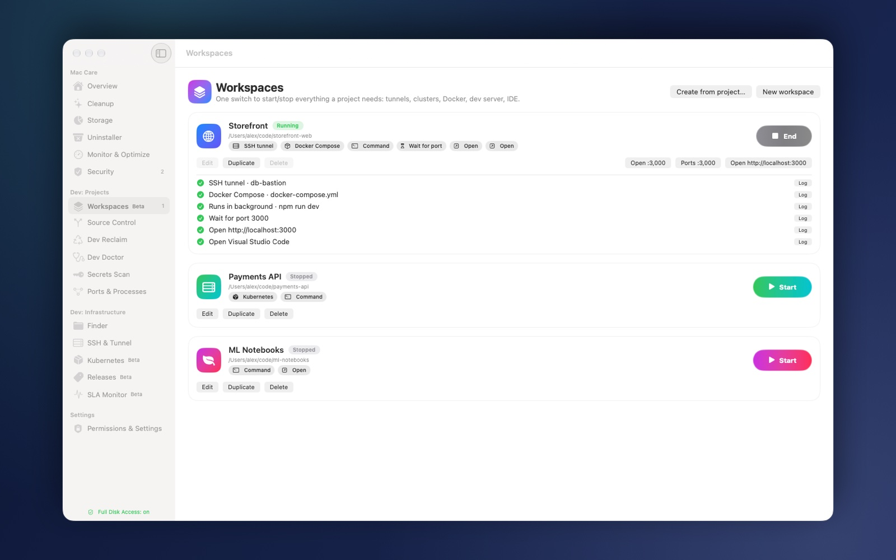
Features
Two toolkits, one 6 MB app.
Dev Reclaim
Find node_modules, .venv, target and Pods in projects you haven't touched in months, and take the space back.
- Idle projects ranked by reclaimable size
- Docker build cache included
- Everything regenerates with one install
Ports & Processes
See who is holding port 3000 and stop it in one click.
- Every listening port with its process
- Warns when a port is reachable from your LAN
- Open debuggers get flagged
Secrets Scan
Find access keys and tokens left in .env files and git history before someone else does.
- Values are always masked
- Flags secrets already committed to git
- Runs fully offline
Source Control
Every repo on your Mac in one place, from diff to push.
- Diff, stage, commit, branches, stash, push and pull
- Git Radar shows repos with uncommitted work
- Commit messages written by on-device AI
Dev Doctor
A health check for the machine you ship from.
- Toolchains, PATH and git config
- SSH key strength and Homebrew status
- Signing-certificate expiry warnings
Workspaces Beta
Start your whole project environment with one click.
- Tunnels, port-forwards and docker compose
- Dev server and your IDE
- Stop everything just as fast
Command Palette
Press ⌘K in the app, or ⌥⌘K from anywhere, and just type.
- “kill 3000” stops the process on that port
- “reclaim” jumps to Dev Reclaim
- “ssh prod” opens your connection
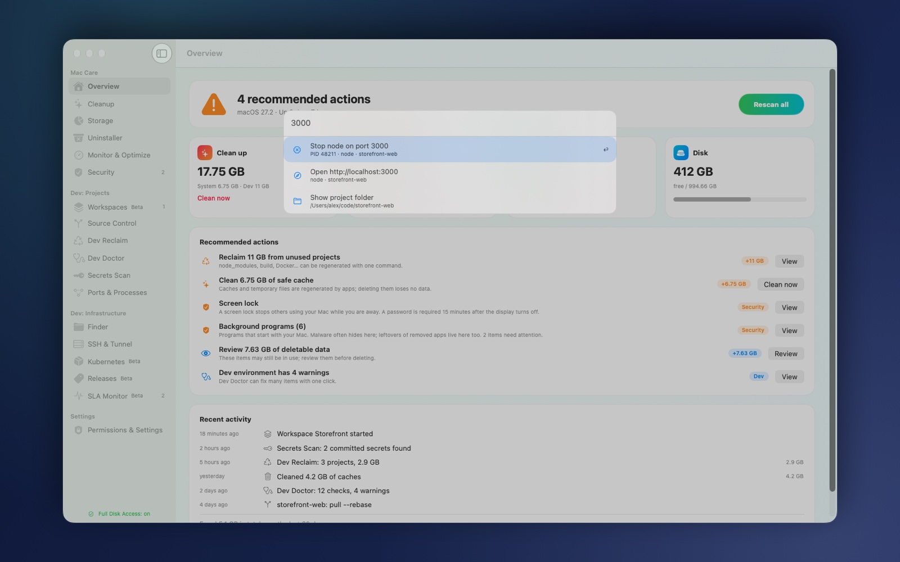
Overview
Your Mac's health at a glance, with actions ranked by payoff.
- Disk, memory and battery health
- Recommended actions ranked by payoff
- CPU, GPU, RAM, SSD health and startup items
Cleanup
Cleanup you can actually click, because everything is labelled by risk.
- Three safety tiers
- Running apps are protected
- Summary and Touch ID before anything is deleted
Security
Check the settings that protect your Mac.
- SIP, FileVault, Gatekeeper and firewall
- Third-party firewalls recognised
- Background items and sensitive permissions reviewed
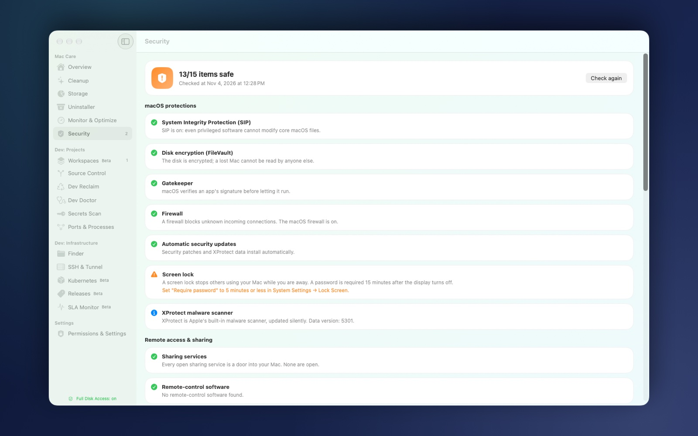
Trust
Built like a security tool.
An app that reads your keys, tokens and project folders has to be more trustworthy than most.
Everything runs on your Mac
Including the AI that writes commits. No server ever sees your code.
No telemetry
No tracking, no analytics, no usage pings.
Secret values never leave the device
Secrets Scan shows masked values only, and runs fully offline.
Summary first, then Touch ID
Every destructive action shows a summary and needs Touch ID to proceed.
A local activity log
Every change is written to a log on your Mac, so you can audit it.
One check, nothing else
To verify your license, the app contacts our licensing service with your license key only.
Pricing
Pay once. Keep it forever.
No subscription. The Free tier is free forever, and every install starts with a 7-day Pro trial.
Free
Forever
- Scans everything: Overview, Security, Dev Doctor, Secrets Scan, Ports & Processes
- Cleanup and Dev Reclaim up to 2 GB per day
- Local Git
- 1 Workspace
- ⌘K navigation
- No one-tap fixes, AI commits, PR/Issues/CI
Pro One-time
2 Macs · 1 year of updates included
- Unlimited cleanup and Dev Reclaim
- One-tap fixes
- AI commit messages, on-device
- PR, Issues and CI in-app
- Unlimited Workspaces
- ⌘K actions
Pro is launching soon — download the free version now; your 7-day Pro trial starts automatically.
Download for Mac — FreeFAQ
Questions, answered.
Is this a subscription?
No. Pro is 29 US$ once. You keep using the version you bought forever, and updates are included for the first year.
What happens after the first year?
The app keeps working, with nothing locked or removed. To keep receiving new versions, renew updates for 15 US$/year. It is optional.
Can I move my license to a new Mac?
Yes. A license covers 2 Macs; deactivate one in the app and activate the new one. Need a third? Add a Mac for 9 US$.
What if my old Mac is lost?
Contact us and we will free up its seat so you can activate a replacement.
Does MacCleaner send my data anywhere?
No. MacCleaner runs entirely on your Mac, including the AI that writes commit messages. No analytics, no tracking. To verify your license, the app contacts our licensing service with your license key only.
Will it delete something important?
Not without you knowing. Every item is labelled by risk, running apps are protected, and every deletion shows a summary and asks for Touch ID first.
What do I need to run it?
macOS 27 or later and about 6 MB of disk space. The interface is available in English and Vietnamese.
How do I install it?
Download the DMG, drag MacCleaner to Applications and open it. The first time, macOS asks you to confirm opening an app downloaded from the internet.
Clean machine. Faster ship.
macOS 27+ · 6 MB · 7-day Pro trial included